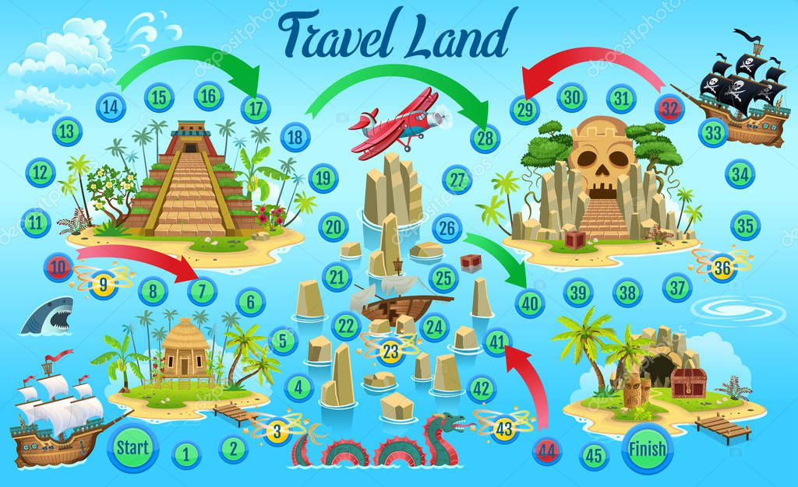
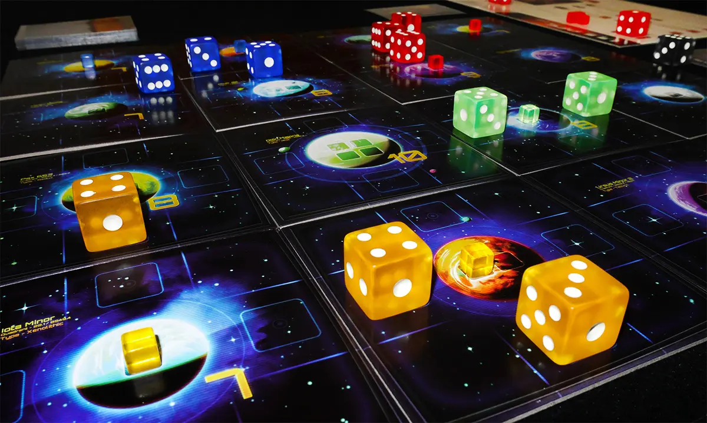

Disfruta de la versión clásica del juego, perfecta para principiantes y jugadores experimentados.
Un tablero lleno de sorpresas y retos, ideal para aquellos que buscan una experiencia emocionante y dinámica.
Explora un tablero con temática futurista, con elementos de ciencia ficción y tecnología avanzada.